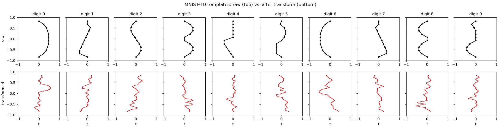
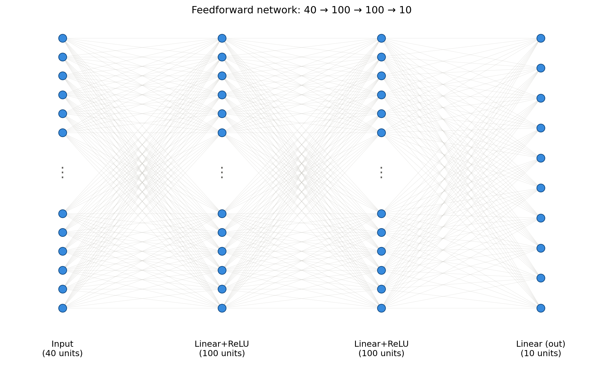
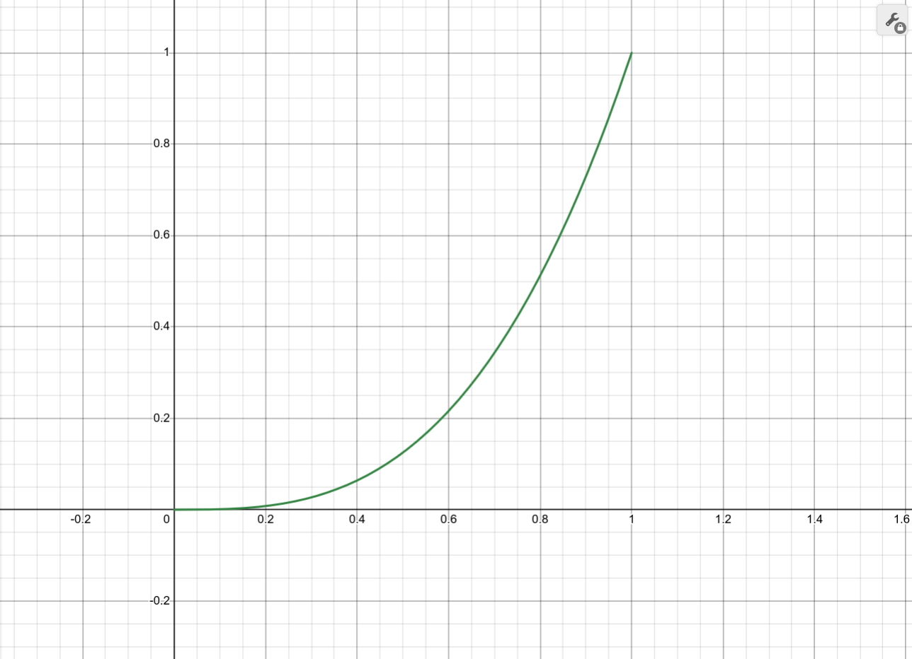
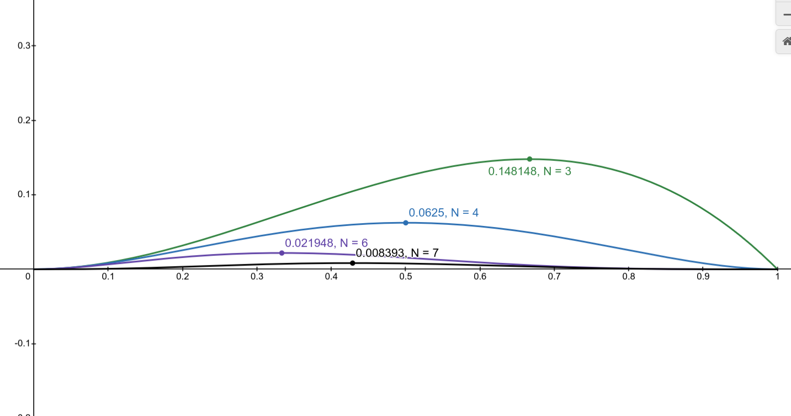
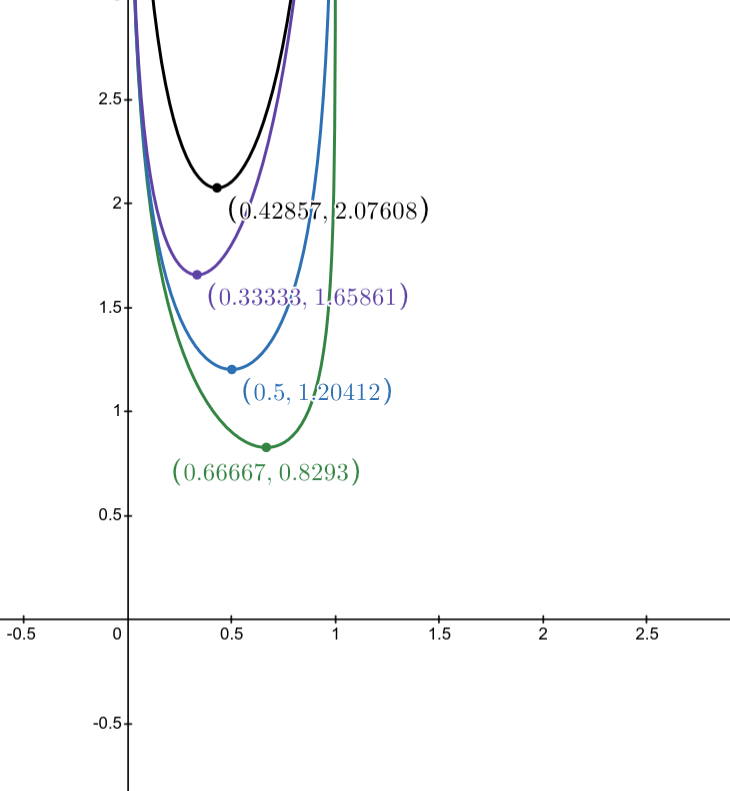
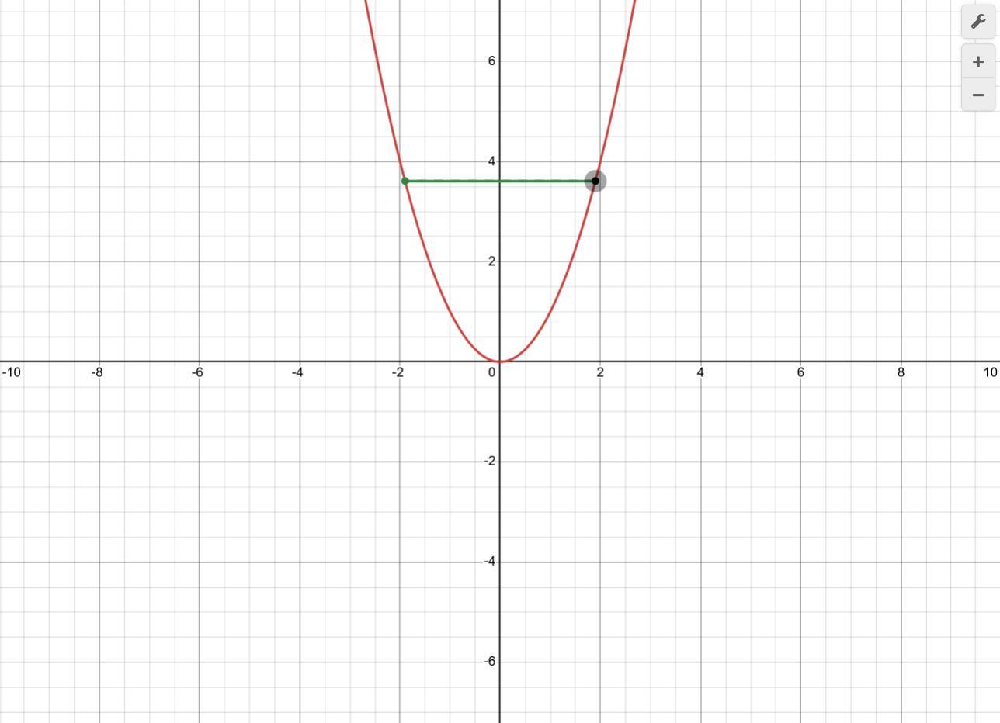
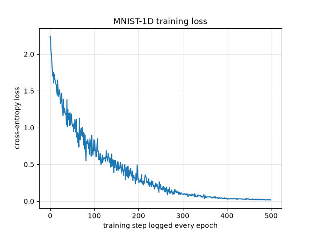

|
Implementing MNIST-1D without pytorch cause I like pain |
IntroductionThis is a deep dive analysis of how I trained a simple Feed Forward model to classify the MNIST-1D (Greydanus and Kobak 2024) dataset without using pytorch. Just numpy. What exactly is the MNIST-1D dataset ?Of course any person who have done any sort of AI/ML has got to know of the iconic MNIST (Modified National Institute of Standards and Technology) dataset (LeCun, Cortes, and Burges, n.d.), a collection of handwritten images with labels. It is often thought as the “hello world” equivalent of Machine Learning. What makes the MNIST-1D different however is that instead of classifying 2 dimensional images (with size of 28x28), it classifies a flattened 40 dimensional vector  Another interesting property of the MNIST-1D dataset is that it helps to differentiate if the model has spatial inductive bias, if it generalizes to new data, and if it is either a linear or non-linear model. Simple Model descriptionOf course, since the MNIST dataset input x_i and the dataset output y_i from the dataset I = \{x_i, y_i\}_{i=1}^N are of size 40 and 10 respectively, we need a function that is capable of taking said inputs and outputs. Lets define the model as f[x, \phi] where it takes in a vector x with parameters \phi. One way of modeling such a function is through a Neural network or a MLP (Multi Layered Perceptron). Visually it looks as follows:  The above diagram can be modeled through the following operations: f_0 = W_0 X_0 + B_0 h_1 = a(f_0) f_1 = W_1 h_1 + B_1 h_2 = a(f_2) f_2 = W_2 h_2 + B_2 Where W_0 \in \mathbb{R}^{100 \times 40}, B_0 \in \mathbb{R}^{100}, W_1 \in \mathbb{R}^{100 \times 100}, B_1 \in \mathbb{R}^{100 \times 1}, W_2 \in \mathbb{R}^{10 \times 100}, B_2 \in \mathbb{R}^{10} and the function a(\mathbf{x}) is a ReLU function. Of course prior to training the parameters \phi given from a FCN, one must have a “criteria” or conventionally a function that describes how well it fits the dataset I. Said criterion is called a loss function. But, What exactly is a loss function ?A loss function, is as stated prior, a reliable indicator of how well the model fits with the dataset. Now of course finding said function is the part that is tricky. For instance, one might naively assume that just summing up the absolute difference i.e : \sum_{i=1}^N |y_i - f[x_i, \phi]| might give, in the case of a regression task, a reliable indicator of how well it fits. However, one might ask why did I use the absolute value and not the squared of their difference ? or instead of it being the squared difference, it is instead the difference with the power of 2k, where k \in \{1, 2, \ldots, \infty \}. Amongst all different possible forms of loss functions, which one is the best ? Lets shift the perspective entirely and re-word the entire problem. The problem here is that we need to find the accurate parameters \phi for the model f given the dataset I. If we treat the samples I as being random variables X, Y sampled from a probability distributions P \in P_n (where P_n is the set containing all different families of probability distributions) and what we need to find is the following distribution: P(Y_1, Y_2, \ldots Y_n \mid X_1, X_2, \ldots X_n) Of course we can further refine this distribution by replacing the random variables X with the function’s output given X with the parameters \phi, Meaning: P(Y_1, Y_2, \ldots Y_n \mid f[x_1, \phi], f[x_2, \phi], \ldots f[x_n, \phi]) is the probability distribution that best describes the samples from the dataset. However, finding the probability distribution is the tricky party. Since the probability distribution is dependent on the parameter \phi. We do this with the likelihood function A likelihood function is a function that basically represents how likely the parameter \phi best represents the probability distribution. Which funnily enough is the exact thing we need and described as a loss function. So, finding the probability distribution’s likelihood function is equivalent to finding the best loss function (provided that the probability distribution’s family P_n is the correct one we chose). The likelihood function is, by treating the phi as the input, as follows: L(\phi) = P(Y_1, Y_2, \ldots Y_n \mid f[x_1, \phi], f[x_2, \phi], \ldots f[x_n, \phi]) Hence, finding the parameter \phi that maximizes this function is the distribution we seek \hat{\phi} = \operatorname{argmax}_\phi [P(Y_1, Y_2, \ldots Y_n \mid f[x_1, \phi], f[x_2, \phi], \ldots f[x_n, \phi])] if we also operate under the assumption that the dataset is i.i.d (independent and identically distributed 1), then: \hat{\phi} = \operatorname{argmax}_\phi \left[ \prod_{i=1}^N P(Y_i \mid f[x_i, \phi]) \right] However the theoretical formulation of the likelihood function may seem un-intuitive, so lets start with a simpler explanation Lets assume that we have samples Y = \{1, 1, 1\} taken from an Bernoulli distribution sampled 3 times. Assume that the trials are i.i.d. So the Likelihood function for the probability distribution P(1,1,1 \mid p): L(p \mid x) = P(1,1,1 \mid p) = p(1 \mid p) p(1 \mid p) p(1 \mid p) = (1-p)^0 p \cdot (1-p)^0 p \cdot (1-p)^0 p = p^3 When we plot the likelihood function:  From here we can infer that by taking p=1, we maximize the likelihood function and find the parameters If we do increase the size of the dataset, then the maximum parameter that is found from the likelihood function is closer to the true parameter that describes the distribution. You can see this being true through the following python code: However, if we do increase the size of the dataset, we come across another problem. That being the products of the parameters continually become smaller and smaller. While the theoretical assumptions of the likelihood function are sound, it becomes computationally infeasible. The reason being, finding the parameter \hat{\phi} becomes harder as the function’s range become closer and closer to zero.  To solve this, all we need to do is to compose this by a function that preserves the position of l(\hat{\phi}) while making it easier to compare. Such functions that satisfy said criteria are called monotonic functions. One example of a monotonic function is the log function. Let g(x) = \log(x) and since g is a monotonic function: \hat{\phi} = \operatorname{argmax}_\phi [l(\phi)] \Rightarrow \hat{\phi} = \operatorname{argmax}_\phi [g(l(\phi))] We can also reformulate the equation to minimize the loss function as opposed to maximizing it by multiplying it with -1. Hence: \hat{\phi} = -\operatorname{argmin}_\phi [\log(l(\phi))] \hat{\phi} = -\operatorname{argmin}_\phi \left[ \log\left(\prod_{i=1}^N P(Y_i \mid f[x_i, \phi])\right) \right] \hat{\phi} = -\operatorname{argmin}_\phi \left[ \sum_{i=1}^N \log\left(P(Y_i \mid f[x_i, \phi])\right) \right] The above formulation is theoretically equivalent to the likelihood function stated prior and solves the issue of smaller values (since log of a value that is between 0 and 1 returns a huge negative number, and its value being multiped by -1 makes it a huge positive number ) The reason we chose \log compared to other functions is that it makes it easier to compute the product of the probability distributions by the following property: f(a b) = f(a) + f(b)  The final thing we need to do is to find the family of the probability distribution P \in P_n that satisfies the constraints of the dataset I. Since Y_i is a discrete sample (i.e, the range of its values is a countably finite set of \{1, 2, \ldots 10\}) and since X_i is a multivariate continuous random variable. We need a probability distribution P, that takes in P(Y_i). We can do this by making P a multi class probability distribution, where P(Y_i \mid \lambda) = \lambda_k and \sum_{k'}^K \lambda_{k'} = 1. Meaning we would need to change the outputs f_{2,k} into a valid lambda parameter. Such constraint can be fulfilled through the “softmax” function. The softmax function is defined as: \operatorname{softmax}_k(F) = \frac{e^{F_k}}{\sum_{k'}^K e^{F_{k}}} where the input F \in \mathbb{R}^B, B \in \{2, 3, \ldots \} or F is a vector. In this case, F is often called logits. In the case of our model, they are the 10 dimensional vector we get in the end. Hence the negative log likelihood function is: L(\phi) = -\sum_{i=1}^N \log(\operatorname{softmax}_{y_i}(f[x_i, \phi])) Now that we do have the valid and best criterion for the MNIST-1D dataset. We need to find the the optimal parameters. Finding the optimal \hat{\phi}Now, we have the data, the loss function we seek to optimize, and the function (written not in order). Now the question is, how do we find \hat{\phi} ? Since \hat{\phi} = -\operatorname{argmin}_\phi \left[ \sum_{i=1}^N \log\left(P(Y_i \mid f[x_i, \phi])\right) \right], one naive solution is to just find L'(\phi), then evaluate L(\hat{\phi}) = 0 to find \hat{\phi}. Alright lets start by doing that, is what I would have said if I was a filthy math masochist. No I am not, and finding 40 \times 100 + 100 \times 100 + 100 \times 10 = 15000 parameter’s partial derivatives by hand is not a good idea. Of course it is possible to find said derivatives computationally, but even that doesn’t give us the closed form solution. There are two reasons for this, the first being the non linearity of the model. As the model’s size increase , with it’s composition of ReLU functions and the softmax function, it’s non-linearity becomes more complex than a polynomial with degree greater than 5. This distinction is important, since it is impossible to find a degree 5 polynomial’s roots in a closed form (see Abel–Ruffini theorem (contributors, n.d.) for more info), and since the function L'(\phi) is more complex than a 1-Dimensional polynomial, it is hard to find a closed form solution. The second is when we took the derivative of the loss function and evaluated it at 0, we assumed that the loss function is convex. A convex function has only one minimizer (or maximizer but it doesn’t concern us). However the loss function L(\phi) for our model is not necessarily convex. One can prove if a given model is complex or not by getting their Hessian matrix’s eigenvalues. The Hessian matrix is the matrix that contains the given function’s second order partial derivatives. While the Jacobian is the function’s first order partial derivatives. I don’t quite understand how the eigenvalues correlate to convexity. Hopefully once I do, it becomes something I will dedicate an entire explanation for. but for now one can use it to deduce if a given model’s loss function is convex or not. There are some problems, for instance linear regression, where the model is linear and is convex. For such cases closed forms do exist. See (Hatcher 2022) for more details. So since closed form solutions are infeasible for our FCN, we use another method, which is using a technique called gradient descent. Gradient DescentGradient descent is a way of finding \hat{\phi} through the use of the gradients evaluated at a random \phi_r. We know that taking the gradient gives us the slope at that point. By making use of the slope, we can move our current parameter vector \phi_t to another point in the parameter space \phi_{t+1}. Where every iteration hopefully goes closer and closer to \hat{\phi} Hence we can formulate it as follows: \phi_{t+1} \to \phi_t - \frac{\partial L}{\partial \phi_t} but of course just subtracting the partial derivative is not a good idea, to show why, lets start with a simple example. Lets assume the loss is L(\phi) = \phi_1^2, \phi_1 \in \mathbb{R}. Lets start with \phi_1 = 2 at t = 1 Plotting the graph results in:  The oscillation happens because of the size of the partial derivative. While it tells us of the direction, the magnitude it carries might move it further away from the minimum. Hence we need to multiply it by a value between 1 and 0. Said parameter is called the learning rate. We can redefine the gradient descent as follows: \phi_{t+1} \to \phi_t - \alpha \cdot \frac{\partial L}{\partial \phi_t} Where \alpha is the learning rate hyper parameter. Of course there are problems with that approach. Lower the learning rate too much, then the function may never be able to jump over a local minimum to get to the actual global minimum. One would also need more iterations to get to a lower minimum value with a lower learning rate value. 
There are also saddle points, in which case the loss landscape (in a multi dimensional scale), is flat enough to have it’s gradient become zero (or closer to one). Which makes it impossible for the gradient descent to meaningfully converge to a minimum point. Of course, there are also other complexities of the optimization we would need to consider. For instance for our case, since we have 15,000 parameters, it would mean that we would need to find a global minimum on a loss landscape with a function found on 15,001 dimensions. Imagining the interecate details of 15,001 dimensional function is hard, I barely can understand 3 dimensional functions let alone that. To solve some of the problems crude Gradient descent harbors, one can make use of stochastic gradient descent. Where instead of computing the entire loss function’s partial derivative \frac{\partial L}{\partial \phi_t}, we compute a smaller randomly sampled batch \frac{\partial l}{\partial \phi_t} where l(\phi) = \sum_{i=1}^{N_b} l_i. l_i is the loss function sampled at i and i \in \{1, 2, \ldots N_b\}, N_b < N, Where N is the size of the entire dataset. The interesting thing about SGD is that by computing the gradients at a smaller batch, we are basically evaluating the gradients at another slightly different loss landscape (since the loss landscape depends on the dataset I). and while it acts randomly on the real entire loss landscape, said stochastic nature will hopefully push it out of saddle points and local minimum. It also has the added bonus of using less compute than using the entire sample as training.
There are also techniques that makes use of the past gradient’s momentum as a means of moving it further to a minimum value. However I will not be using one, it is a topic I will explore deeply on its own. 4 Actually finding the GradientsOur goal is to find the partial derivatives of \left\{\frac{\partial l_i}{\partial W_k}, \frac{\partial l_i}{\partial B_k}\right\} for k \in \{0, 1, 2\} and through these gradients to we hope to improve the model. I implore you to write the entire function on a piece of paper and compute the partial derivatives of all of the parameters (I tried it, was a horrible experience :( don’t do this pls). However, since the entire function has a similar structure, it is easier to make use of the chain rule to compute the required gradients. Of course in order to do that, lets return back to the normal feed forward formula: f_0 = W_0 X_0 + B_0 h_1 = a(f_0) f_1 = W_1 h_1 + B_1 h_2 = a(f_1) f_2 = W_2 h_2 + B_2 with the loss function as: L = -\sum_{p=1}^N \log(\operatorname{softmax}_{y_p}(f_2)) We can reformulate this loss function as follows: L = \sum_{p=1}^N l_p, \quad \text{where } l_p = -\log(\operatorname{softmax}_{y_p}(f_2)) = -\log\left(\frac{e^{f_{2,y_p}}}{\sum_{k'=1}^K e^{f_{2,k'}}}\right) Assuming that log is the natural logarithm 5: l_p = -f_{2,y_p} + \log\left(\sum_{k'=1}^K e^{f_{2,k'}}\right) We do this because its easier to then make use of the property of the sum derivative rule (Wikipedia, n.d.) \frac{\partial L}{\partial W} = \sum_{p=1}^N \frac{\partial l_p}{\partial W} This is also true for \frac{\partial L}{\partial B} In order to find the partial derivatives of the parameters, our goal is to first find \frac{\partial l_p}{\partial f_k} and \frac{\partial l_p}{\partial h_k} for k \in \{0, 1, 2\}. Assuming that \frac{\partial l_p}{\partial f_2} is already calculated: \frac{\partial l_p}{\partial h_2} = \frac{\partial l_p}{\partial f_2} \frac{\partial f_2}{\partial h_2} \frac{\partial l_p}{\partial f_1} = \frac{\partial l_p}{\partial f_2} \frac{\partial f_2}{\partial h_2} \frac{\partial h_2}{\partial f_1} \frac{\partial l_p}{\partial h_1} = \frac{\partial l_p}{\partial f_2} \frac{\partial f_2}{\partial h_2} \frac{\partial h_2}{\partial f_1} \frac{\partial f_1}{\partial h_1} \frac{\partial l_p}{\partial f_0} = \frac{\partial l_p}{\partial f_2} \frac{\partial f_2}{\partial h_2} \frac{\partial h_2}{\partial f_1} \frac{\partial f_1}{\partial h_1} \frac{\partial h_1}{\partial f_0} If we observe the chain rule, one can see a pattern, i.e the partial derivatives of the first layers can be written with respect to its subsequent layer, since we are going backwards, we can reformulate it as: \frac{\partial l_p}{\partial h_2} = \frac{\partial l_p}{\partial f_2} \frac{\partial f_2}{\partial h_2} \frac{\partial l_p}{\partial f_1} = \left(\frac{\partial l_p}{\partial f_2} \frac{\partial f_2}{\partial h_2}\right) \frac{\partial h_2}{\partial f_1} = \frac{\partial l_p}{\partial h_2} \frac{\partial h_2}{\partial f_1} \frac{\partial l_p}{\partial h_1} = \left(\frac{\partial l_p}{\partial f_2} \frac{\partial f_2}{\partial h_2} \frac{\partial h_2}{\partial f_1}\right) \frac{\partial f_1}{\partial h_1} = \frac{\partial l_p}{\partial f_1} \frac{\partial f_1}{\partial h_1} \frac{\partial l_p}{\partial f_0} = \left(\frac{\partial l_p}{\partial f_2} \frac{\partial f_2}{\partial h_2} \frac{\partial h_2}{\partial f_1} \frac{\partial f_1}{\partial h_1}\right) \frac{\partial h_1}{\partial f_0} = \frac{\partial l_p}{\partial h_1} \frac{\partial h_1}{\partial f_0} Generalizing for k \in \{0, 1, 2\}: \frac{\partial l_p}{\partial h_k} = \frac{\partial l_p}{\partial f_k} \frac{\partial f_k}{\partial h_k} \quad \text{for } k \ne 0 \frac{\partial l_p}{\partial f_k} = \frac{\partial l_p}{\partial h_{k+1}} \frac{\partial h_{k+1}}{\partial f_k} \quad \text{for } k \ne 2 Then all we need to do is to find the generalized partial derivative \frac{\partial f_k}{\partial h_k} and \frac{\partial h_{k+1}}{\partial f_k} Then, through \frac{\partial l_p}{\partial f_k} we can calculate \frac{\partial l_p}{\partial W_k} and \frac{\partial l_p}{\partial B_k} Of course to start the back propagation we would need to find \frac{\partial l_p}{\partial f_2}. Since l_p is a scalar quantity, but f_2 is a vector with elements f_{2,k'} for k' \in \{1, 2, \ldots K\} \Rightarrow \frac{\partial l_i}{\partial f_2} is a jacobian matrix with order 1xK or Kx1. A jacobian matrix is the matrix that contains all of the partial derivatives of the two objects. If it is a matrix with size 1xK, it implies that the matrix containing the partial derivatives are denoted through numerator notation. However if it is written through the latter. then it implies that the form is written through denominator notation. I will be using the denominator notation but might change my mind cause I’m a dumbass 6. Then: \frac{\partial l_p}{\partial f_2} := \begin{bmatrix} \frac{\partial l_p}{\partial f_{2,1}} \\ \frac{\partial l_p}{\partial f_{2,2}} \\ \vdots \\ \frac{\partial l_p}{\partial f_{2,K}} \end{bmatrix} In order to get the entire value of the partial derivative, we need to evaluate each of it’s elements. For instance, what does it mean to evaluate say, \frac{\partial l_p}{\partial f_{2,1}} ? Well, it means evaluating the expression of the loss function by treating the f_{2,1} as the unknown variable intended to be differentiated and treating the rest of the variables as mere constants. Think of it as slicing the function l_i[f_{2,1}, f_{2,2}, f_{2,3}, \ldots f_{2,K}] on points (f_{2,2}, f_{2,3}, \ldots f_{2,k}) on a multi-dimensional space. Thereby changing the loss function to a simple expression as l_i[f_{2,1}]. Lets start by solving for \frac{\partial l_p}{\partial f_{2,k}}, Since y_p and k \in \{1,2, \ldots K\}, f_{2,k} can either be f_{2,y_p} or not, hence we evaluate the expression \frac{\partial l_p}{\partial f_{2,k}} by assuming both cases \text{if } k \ne y_p \Rightarrow \frac{\partial l_p}{\partial f_{2,k}} = \frac{\partial}{\partial f_{2,k}} \left(-f_{2,y_p} + \log \sum_{k'=1}^K e^{f_{2,k'}}\right) \Rightarrow \frac{\partial l_p}{\partial f_{2,k}} = \frac{\partial}{\partial f_{2,k}} \left(\log \sum_{k'=1}^K e^{f_{2,k'}}\right) = \frac{e^{f_{2,k}}}{\sum_{k'=1}^K e^{f_{2,k'}}} = \operatorname{softmax}_k(f_2) \text{if } k = y_p \Rightarrow \frac{\partial l_p}{\partial f_{2,1}} = \frac{\partial}{\partial f_{2,k}} \left(-f_{2,y_p} + \log \sum_{k'=1}^K e^{f_{2,k'}}\right) \Rightarrow \frac{\partial l_p}{\partial f_{2,k}} = -1 + \frac{\partial}{\partial f_{2,k}} \left(\log \sum_{k'=1}^K e^{f_{2,k'}}\right) = \frac{e^{f_{2,k}}}{\sum_{k'=0}^K e^{f_{2,k'}}} - 1 = \operatorname{softmax}_k(f_2) - 1 This expression can be further simplified by generalizing for \frac{\partial l_i}{\partial f_{2,k}} for all k as : \frac{\partial l_p}{\partial f_{2,k}} = \operatorname{softmax}_k(f_2) - \delta_{k,y_p} Where \delta_{i,j} is called the Kronecker delta and is defined as: \delta_{i,j} = \begin{cases} 0 & \text{if } i \ne j \\ 1 & \text{if } i = j \end{cases} We can then make use of \frac{\partial l_p}{\partial f_2} to find \frac{\partial l_p}{\partial h_2}: \frac{\partial l_p}{\partial h_2} = \frac{\partial l_p}{\partial f_2} \frac{\partial f_2}{\partial h_2} \quad \text{where } \frac{\partial f_2}{\partial h_2} = \frac{\partial}{\partial h_2} (W_2 h_2 + B_2) Of course one would ask, what does it mean to take the derivative of a vector with respect to a vector? Since the Jacobian of said derivative must evaluate to a matrix, we need to evaluate what each of the rows and columns corrospond to: Via denominator notation: \frac{\partial f_{2,j}}{\partial h_{2,i}} = \frac{\partial}{\partial h_{2,i}}\left(B_j + \sum_{m=1}^M W_{2,jm} h_{2,m}\right), \quad \text{where } m \text{ and } j \in \{1, 2, \ldots, M\} \Rightarrow \frac{\partial f_{2,j}}{\partial h_{2,i}} = W_{2,ji} When generalized for the entire matrix: \Rightarrow \frac{\partial f_2}{\partial h_2} = W_2^T Then for h_2: \frac{\partial l_p}{\partial h_2} = \frac{\partial l_p}{\partial f_2} W_2^T Generalizing for all k \in \{0, 1, 2\}, where k \ne 0: \frac{\partial l_p}{\partial h_k} = \frac{\partial l_p}{\partial f_k} W_k^T Now solving for \frac{\partial l_p}{\partial f_k}, we need to calculate \frac{\partial h_{k+1}}{\partial f_k}, Recall that: h_{k+1} = a(f_k) \Rightarrow \frac{\partial h_{k+1}}{\partial f_k} = \frac{\partial}{\partial f_k} (a(f_k)) Recall that the function a(\mathbf{x}) for any vector input \mathbf{x} is equivalent to computing \max(x_i, 0)\ \forall i, \text{ where } i \in \{1, 2, \ldots |\mathbf{x}|\} 7. Or in simpler terms, every corresponding element becomes zero if it is negative, else it doesn’t change. In order to evaluate the Jacobian matrix of said derivative, let start by defining a(f_k) as Q \Rightarrow \frac{\partial}{\partial f_k} a(f_k) = \frac{\partial Q}{\partial f_k} \Rightarrow \frac{\partial Q_j}{\partial f_{k,i}} = \frac{\partial}{\partial f_{k,i}} \left(\max(f_{k,i}, 0)\right) \frac{\partial}{\partial f_{k,i}}(\max(f_{k,i}, 0)) is 1 if f_{k,i} > 0 else it is 0, Therefore: \frac{\partial Q_j}{\partial f_{k,i}} = S(f_{k,i}, 0) where: S(a, b) = \begin{cases} 1 & \text{if } a > b \\ 0 & \text{else} \end{cases} Meaning for cases where i \ne j: \frac{\partial Q_j}{\partial f_{k,i}} = 0 Therefore when writing the entire Jacobian: \frac{\partial Q}{\partial f_k} = \begin{bmatrix} \frac{\partial Q_1}{\partial f_{k,1}} & \frac{\partial Q_2}{\partial f_{k,1}} & \cdots & \frac{\partial Q_K}{\partial f_{k,1}} \\ \frac{\partial Q_1}{\partial f_{k,2}} & \frac{\partial Q_2}{\partial f_{k,2}} & \dots & \frac{\partial Q_K}{\partial f_{k,2}} \\ \vdots & \vdots & \ddots & \vdots \\ \frac{\partial Q_1}{\partial f_{k,K}} & \frac{\partial Q_2}{\partial f_{k,K}} & \dots & \frac{\partial Q_K}{\partial f_{k,K}} \end{bmatrix} = \begin{bmatrix} S(f_{k,1}) & 0 & \dots & 0 \\ 0 & S(f_{k,2}) & \dots & 0 \\ \vdots & \vdots & \ddots & \vdots \\ 0 & 0 & \dots & S(f_{k,K}) \end{bmatrix} = \mathbb{I}_{|f_k|} \cdot S(f_k) \mathbb{I}_{|f_k|} is the identity matrix with the size equivalent to the vector f_k and S(f_k) is a vector where the function S is applied to it element wise. Since \frac{\partial Q}{\partial f_k} is equivalent to \frac{\partial h_{k+1}}{\partial f_k}, the above matrix formulation is equivalent and therefore what we need. Now after getting the required partial derivatives, we make use of \frac{\partial l_p}{\partial f_k} to get \frac{\partial l_p}{\partial W_k} and \frac{\partial l_p}{\partial B_k}. Lets start by finding \frac{\partial l_p}{\partial W_k}, Since: \frac{\partial l_p}{\partial W_k} = \frac{\partial l_p}{\partial f_k} \frac{\partial f_k}{\partial W_k} We need to find \frac{\partial f_k}{\partial W_k}, of course the raw Jacobian of said derivative isn’t a matrix anymore but rather a tensor. However, the nature of the derivative changes when we make use of the chain rule, because in the end, the partial derivative \frac{\partial l_p}{\partial W_k} is a matrix (since the loss is a scalar and W_k is a matrix). Therefore instead of trying to compute or find a way to multiply a 3 dimensional tensor with a vector, we can instead define each of the values as: \frac{\partial l_p}{\partial W_{k,ij}} = \frac{\partial l_p}{\partial f_{k,i}} \frac{\partial f_{k,i}}{\partial W_{k,ij}} \frac{\partial f_{k,i}}{\partial W_{k,ij}} = \frac{\partial}{\partial W_{k,ij}} \left(B_{k,i} + \sum_o W_{k,io} h_{k,o}\right) = h_{k,j} \Rightarrow \frac{\partial l_p}{\partial W_{k,ij}} = \frac{\partial l_p}{\partial f_{k,i}} h_{k,j} \Rightarrow \frac{\partial l_p}{\partial W_k} = \begin{bmatrix} \frac{\partial l_p}{\partial W_{k,11}} & \frac{\partial l_p}{\partial W_{k,12}} & \dots & \frac{\partial l_p}{\partial W_{k,1C}} \\ \frac{\partial l_p}{\partial W_{k,21}} & \frac{\partial l_p}{\partial W_{k,22}} & \dots & \frac{\partial l_p}{\partial W_{k,2C}} \\ \vdots & \vdots & \ddots & \vdots \\ \frac{\partial l_p}{\partial W_{k,R1}} & \frac{\partial l_p}{\partial W_{k,R2}} & \dots & \frac{\partial l_p}{\partial W_{k,RC}} \end{bmatrix} = \begin{bmatrix} \frac{\partial l_p}{\partial f_{k,1}} h_{k,1} & \frac{\partial l_p}{\partial f_{k,1}} h_{k,2} & \dots & \frac{\partial l_p}{\partial f_{k,1}} h_{k,C} \\ \frac{\partial l_p}{\partial f_{k,1}} h_{k,2} & \frac{\partial l_p}{\partial f_{k,2}} h_{k,2} & \dots & \frac{\partial l_p}{\partial f_{k,2}} h_{k,C} \\ \vdots & \vdots & \ddots & \vdots \\ \frac{\partial l_p}{\partial f_{k,R}} h_{k,1} & \frac{\partial l_p}{\partial f_{k,R}} h_{k,2} & \dots & \frac{\partial l_p}{\partial f_{k,R}} h_{k,C} \end{bmatrix}, \quad \text{where } R = K where R = K, i.e the size of f_k and C = |h_2|, i.e the size of h_k \therefore \frac{\partial l_p}{\partial W_k} = \begin{bmatrix} \frac{\partial l_p}{\partial f_{k,1}} \\ \frac{\partial l_p}{\partial f_{k,2}} \\ \vdots \\ \frac{\partial l_p}{\partial f_{k,K}} \end{bmatrix} \begin{bmatrix} h_{k,1} & h_{k,2} & \dots & h_{k,C} \end{bmatrix} = \frac{\partial l_p}{\partial f_k} h_k^T Solving for \frac{\partial l_p}{\partial B_k} is albeit simpler than W_k: \frac{\partial l_p}{\partial B_k} = \frac{\partial l_p}{\partial f_k} \frac{\partial f_k}{\partial B_k} \Rightarrow \frac{\partial l_p}{\partial B_{k,i}} = \frac{\partial l_p}{\partial f_{k,i}} \frac{\partial f_{k,i}}{\partial B_{k,i}} \text{since } \frac{\partial f_{k,i}}{\partial B_{k,i}} = \frac{\partial}{\partial B_{k,i}} \left(B_{k,i} + \sum_o W_{k,io} h_o\right) = 1 \Rightarrow \frac{\partial l_p}{\partial B_{k,i}} = \frac{\partial l_p}{\partial f_{k,i}} \therefore \frac{\partial l_p}{\partial B_k} = \frac{\partial l_p}{\partial f_k} Phew that was a lot of partial derivatives, I need to puke 8, but if you skimmed past the derivations to find the final answer, we can reformulate the entire back propagation for our model as: at k = 2: \frac{\partial l_p}{\partial f_{2,o}} = \operatorname{softmax}_o(f_2) - \delta_{o,y_p} \quad \forall o \in \{1, 2, \ldots, K\} \frac{\partial l_p}{\partial W_2} = \frac{\partial l_p}{\partial f_2} h_2^T \frac{\partial l_p}{\partial B_2} = \frac{\partial l_p}{\partial f_2} \frac{\partial l_p}{\partial h_2} = \frac{\partial l_p}{\partial f_2} W_2^T at k = 1 \frac{\partial l_p}{\partial f_1} = \frac{\partial l_p}{\partial h_2} \left(\mathbb{I}_{|f_1|} \cdot S(f_1)\right) \frac{\partial l_p}{\partial W_1} = \frac{\partial l_p}{\partial f_1} h_1^T \frac{\partial l_p}{\partial B_1} = \frac{\partial l_p}{\partial f_1} \frac{\partial l_p}{\partial h_1} = \frac{\partial l_p}{\partial f_1} W_1^T at k = 0 \frac{\partial l_p}{\partial f_0} = \frac{\partial l_p}{\partial h_1} \left(\mathbb{I}_{|f_0|} \cdot S(f_0)\right) \frac{\partial l_p}{\partial W_0} = \frac{\partial l_p}{\partial f_0} x_p^T \frac{\partial l_p}{\partial B_0} = \frac{\partial l_p}{\partial f_0} Now that we do have a way to calculate our gradients for the model, we can use it to train the model. ImplementationThe entire source code for the implementation can be found here (AquaCoder0010 2026). The following is the specific code block taken from the train.py that implements the training. The Running the model and plotting the loss function with respect to the 10 step sizes results in:  Granted the training loss doesn’t tell us anything about how well it generalized from the data. However model generalization is something I will deeply explore on its own. 9 Not every good at ending stuff so I am just going to end this abruptly. References
AquaCoder0010. 2026.
“MNIST-1D.” https://github.com/AquaCoder0010/MNIST-1D.
contributors, Wikipedia. n.d.
“Abel–Ruffini-Theorem.” https://en.wikipedia.org/wiki/Abel%E2%80%93Ruffini_theorem.
Greydanus, Sam, and Dmitry Kobak. 2024. “Scaling
down Deep Learning with MNIST-1D.” ICML.
Hatcher, Margo. 2022. “Closed-Form Solution to
Linear Regression.” Towards Data
Science, May. https://towardsdatascience.com/closed-form-solution-to-linear-regression-e1fe14c1cbef/.
LeCun, Yann, Corinna Cortes, and Christopher J. C.
Burges. n.d. “The MNIST Handwritten Digit
Database.” https://web.archive.org/web/20200430193701/http://yann.lecun.com/exdb/mnist/.
Wikipedia. n.d. “Linearity of
Differentiation.” https://en.wikipedia.org/wiki/Differentiation_rules#Linearity_of_differentiation.
|
|
|